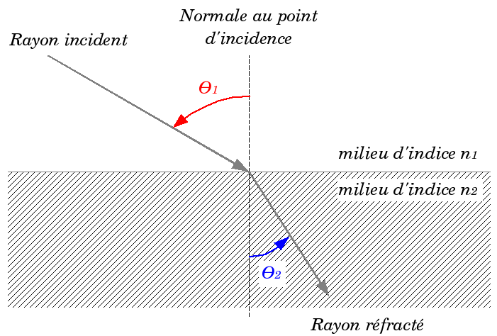
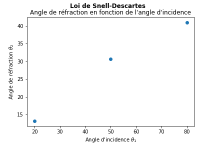
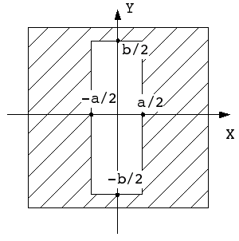
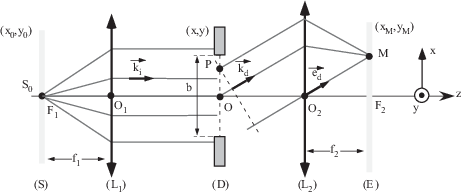
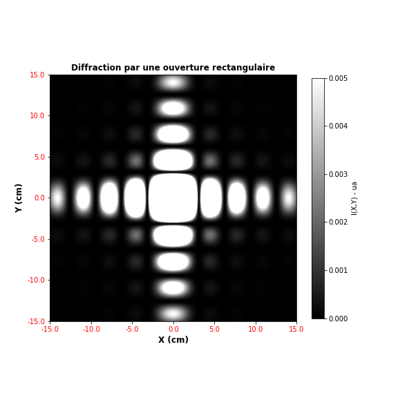
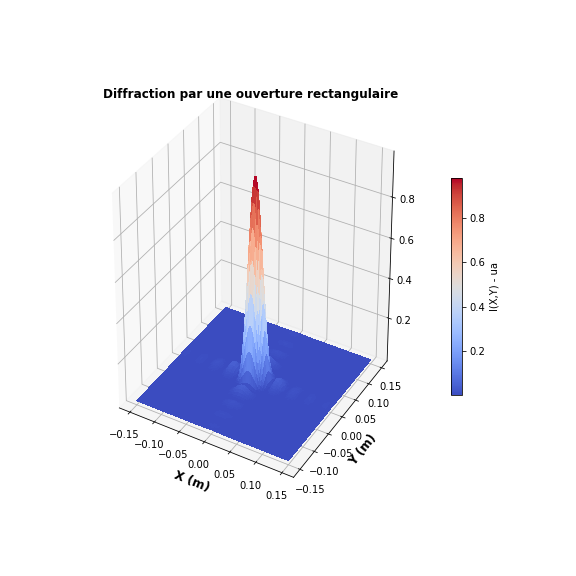
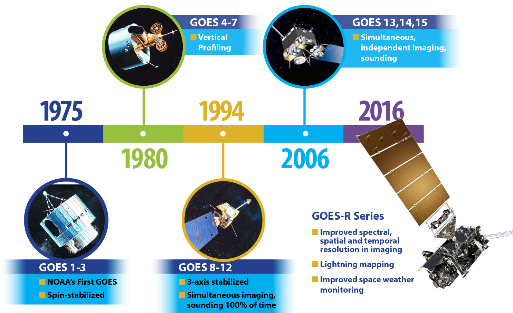
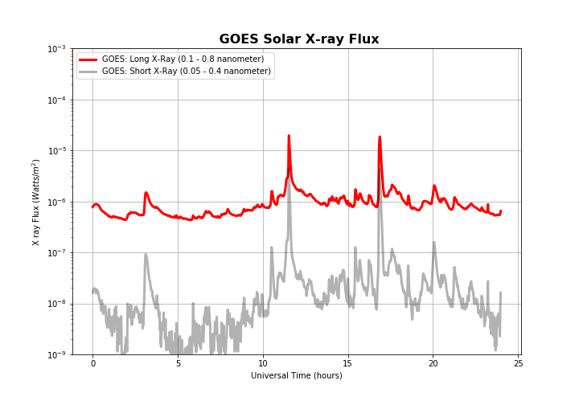
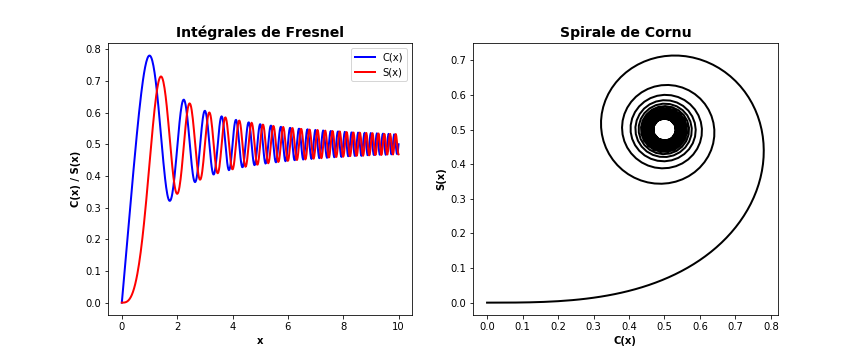

Exercise 1: Tracer une fonction
Ecrivez un programme qui trace la fonction \( g(y) = e^{-y} sin(4y) \) pour \( y \in [0, 4] \) en utilisant une ligne continue rouge. Utilisez 500 intervalles pour évaluer les points dans [0,4]. Stockez toutes les coordonnées et les valeurs dans des tableaux. Placez le texte des graduations sur les axes et utilisez le titre "Onde sinusoïdale atténuée".
La programme qui trace la fonction \( g(y) \) est:
# Importer tout de matplotlib et numpy
from pylab import *
def g(y):
return exp(-y)*sin(4*y)
y = np.linspace(0, 4, 501)
# définir un nouveau graphique
plt.figure()
# tracer la fonction g(y) avec ligne solide rouge
plt.plot(y, g(y), 'r-')
plt.xlabel('y'); plt.ylabel('g(y)')
plt.title('Onde sinusoïdale atténuée')
# sauvgarder le grahique (format PNG et PDF)
plt.savefig("fig_ex1.png"); plt.savefig("fig_ex1.pdf")
# Afficher le graphique
plt.show()
Exercise 2: Tracer deux fonctions
Comme Exercice 1, mais ajouter une courbe en pointillé noir pour la fonction \( h(y) = e^{-\frac{3}{2}y} sin(4y) \). Inclure une légende pour chaque courbe (avec les noms \( g \) et \( h \)).
La programme qui trace la fonction \( g(y) \) avec une nouvelle fonction \( h(y) \) est:
# Importer tout de matplotlib et numpy
from pylab import *
def g(y):
return exp(-y)*sin(4*y)
def h(y):
return exp(-(3./2)*y)*sin(4*y)
y = np.linspace(0, 4, 501)
plt.figure()
plt.plot(y, g(y), 'r-', y, h(y), 'k--')
plt.xlabel('y'); plt.ylabel('g(y)')
plt.title('Onde sinusoïdale atténuée')
plt.legend(['g', 'h'])
plt.savefig("fig_ex2.png"); plt.savefig("fig_ex2.pdf")
plt.show()
Exercise 3: Racines d’une équation du second degré
Dans l'"application de l'exercice 4 dans le TP3, nous avons montré la représentation graphique d'une équation du second degré \( f(x)=0.83x^2+3.8x+2.48 \) ainsi que ses racines réelles:

Reproduire ce graphique en utilisant la fonction
EqSecondDegree(a,b,c) du script Python racines.py pour déterminer les valeurs des racines x1 et x2 de l’équation \( f(x) \).
Le programme qui reproduit la figure en utilisant la fonction EqSecondDegree():
from pylab import *
from racines import EqSecondDegree
# NOTE: le module racines est le fichier racines.py
# qu'on doit placer dans le répertoire de travail.
def f(x):
return 0.83 * x**2 + 3.8 * x + 2.48
x = linspace(-6, 1, 200)
y = f(x)
x1, x2 = EqSecondDegree(0.83, 3.8, 2.48)
figure(figsize=(7, 5), dpi=80)
plot(x, y, color="blue", linewidth=3, linestyle="-", alpha=.8)
scatter([x1,x2], [f(x1), f(x2)], 80, color='red')
annotate('x1= {:.2f}'.format(x1),
xy=(x1, f(x1)), xycoords='data',
xytext=(+10, +30), textcoords='offset points', fontsize=16,
arrowprops=dict(arrowstyle="->", connectionstyle="arc3,rad=.2"))
annotate('x2= {:.2f}'.format(x2),
xy=(x2, f(x2)), xycoords='data',
xytext=(+40, +30), textcoords='offset points', fontsize=16,
arrowprops=dict(arrowstyle="->", connectionstyle="arc3,rad=.2"))
suptitle("Racines d’une équation du second degré", fontweight= 'bold')
title(r"$f(x) = 0.83 * x^2 + 3.8 * x + 2.48$",fontsize=14, color = 'b')
plt.grid()
plt.savefig("equation2deg.png"); plt.savefig("equation2deg.pdf")
plt.show()
Exercise 4: Loi de Snell-Descartes pour la réfraction
La loi de Snell-Descartes stipule que le rapport sinus de l'angle d'incidence sur le sinus de l'angle de réfraction est équivalent au rapport de la vitesse de phase dans le premier milieu à la vitesse de phase dans le deuxième milieu, ou équivalent à l'inverse du rapport des indices de réfraction. $$\dfrac{\sin\theta_1}{\sin\theta_2} = \dfrac{v_1}{v_2} = \dfrac{n_2}{n_1}$$
Où \( \theta_1 \) est l'angle d'incidence dans le premier milieu, \( \theta_2 \) est l'angle de réfraction dans le deuxième milieu, tous les angles mesurés à partir de la normale de la frontière (dioptre), \( v_1 \) et \( v_2 \) sont respectivement les vitesses dans les deux milieux, et \( n_1 \) et \( n_2 \) sont les indices de réfraction du premier et du deuxième milieux, respectivement.

Objectif:
Ecrire un programme Python pour tracer angle de réfraction en fonction de l'angle d'incidence.
Algorithme:
- Afficher:
"Loi de Snell-Descartes pour la réfraction." - Demender un nombre réel n1:
"Entrez l'indice de réfraction du premier milieu: " - Demender un nombre réel n2:
"Entrez l'indice de réfraction du deuxième milieu: " - choix = 'o' et compteur k = 0
- Tant que choix == 'o':
- Stoker dans une liste theta1 un nombre réel
theta1[k]:"Entrez l'angle d'incidence en degrés: " - Condition:
si (n1*sin(theta1[k]))/n2 < -1 ou n1 * (n1*sin(theta1[k]))/n2 > 1: - Afficher:
"Il y aura une réflexion totale pour l'angle d'incidence donné. Essayez d'autres valeurs." - Stoker dans une liste theta1 un nombre réel
theta1[k]:"Entrez l'angle d'incidence en degrés: " - Stoker dans la liste la valeur
theta2[k]:arcsin(n1*sin(theta1[k])/n2 - Afficher:
"L'angle d'incidence est de theta1[k] degrés et l'angle de réfraction de theta2[k] degrés." - Entrer une nouvelle valeur de choix:
"Voulez-vous entrer plus de valeurs (o / n)?: " - k+=1
- si choix == 'n':
- Tracer le graphique de theta2 en fonction de theta1 (exemple pour 3 valeurs de theta1):

Le code Python qui traduit l'algorithme précédent est:
from pylab import *
print("Loi de Snell-Descartes pour la réfraction.")
n1 = float(input("Entrez l'indice de réfraction du premier milieu: "))
n2 = float(input("Entrez l'indice de réfraction du deuxième milieu: "))
choix = "o"
k = 0
theta1, theta2 = [],[]
while choix == "o":
theta1.append(float(input("Entrez l'angle d'incidence en degrés: ")))
if (n1*sin(deg2rad(theta1[k])))/n2 < -1 or n1 * (n1*sin(deg2rad(theta1[k])))/n2 > 1:
print("Il y aura une réflexion totale pour l'angle d'incidence donné. Essayez d'autres valeurs.")
theta1.append(float(input("Entrez l'angle d'incidence en degrés: ")))
theta2.append(rad2deg(arcsin(n1*sin(deg2rad(theta1[k]))/n2)))
print("L'angle d'incidence est de {:.2f} degrés et l'angle de réfraction de {:.2f} degrés.".format(theta1[k], theta2[k]))
choix = input("Voulez-vous entrer plus de valeurs (o / n)?: ")
while (choix!='o') and (choix!='n'):
print("Entrée invalide. Tapez o ou n. ")
choix = input("Voulez-vous entrer plus de valeurs (o / n)?: ")
k +=1
if choix == "n":
scatter(theta1, theta2)
suptitle("Loi de Snell-Descartes", fontweight='bold')
title("Angle de réfraction en fonction de l'angle d'incidence")
xlabel("Angle d'incidence" + r" $\theta_1$")
ylabel("Angle de réfraction" + r" $\theta_2$")
savefig("snell.png")
show()
Exercise 5: Diffraction par une ouverture rectangulaire

Une ouverture rectangulaire de côtés a et b correspond à une transmission \( t(X, Y) \) définie par : $$ \left\{ \begin{array}{ll} t(X,Y) = 1 & si \ |X| < a/2 \ et \ |Y| < b/2 \\ t(X,Y) = 0 & sinon \end{array} \right. $$ Le calcul de l'intensité diffractée par une telle ouverture, c’est-à-dire du carré du module de l'amplitude E(M), donne : $$I(x,y)=|E(x,y)|^2=I_0 \ \mathrm{sinc}^2\left(\frac{\pi xa}{\lambda f_2}\right) \mathrm{sinc}^2\left(\frac{\pi yb}{\lambda f_2}\right)$$

les dimensions de la tache centrale sont :
- \( \Delta x = 2 \lambda f_2/a \)
- \( \Delta y = 2 \lambda f_2/b \)
a)
Écrire une fonction Intensity(X, Y, a = 0.2 * 1.E-3, b = 0.2 * 1.E-3, lambda_ = 630 * 1.E-9, f2 = 10) qui affiche les dimensions de la tache centrale (\( \Delta x \) et \( \Delta y \)) et retourne la valeur de \( I(X,Y) \). Avec:
-
XetYsont respectivement l'abscisse et l'ordonnée à l'écran. -
ala largeur de la fente (par défaut = 0.2 mm) -
bla hauteur de la fente (par défaut = 0.2 mm) -
lambda_la longueur d'onde de la lumière incidente (par défaut = 630 nm) -
f2la distance fente - écran (par défaut = 10 m)
la fonction Intensity() s'écrit:
from pylab import *
def Intensity(X, Y, a = 0.2 * 1.E-3, b = 0.2 * 1.E-3, lambda_ = 630 * 1.E-9, f2 = 10):
# les dimensions de la tache centrale
Dx = 1.E2 * (2 * lambda_ * f2) / a
print("La largeur du maximum central le long (Ox) = {:.3f} cm".format(Dx))
Dy = 1.E2 * (2 * lambda_ * f2) / b
print("La largeur du maximum central le long (Oy) = {:.3f} cm".format(Dy))
# Variables intermidières
A = (pi * X * a)/(lambda_ * f2)
B = (pi * Y * b)/(lambda_ * f2)
return (sin(A)/A)**2 * (sin(B)/B)**2
b)
Créez le graphique de diffraction suivant (à l'aide de la fonction imshow()) pour un écran de 30/30 cm:

La représentation graphique de la figure de diffraction en 2D:
# coordonnées de l'écran
X, Y = meshgrid(linspace(-15*1e-2, 15*1e-2, 400), linspace(-15*1e-2, 15*1e-2, 400))
# Intensité
I = Intensity(X, Y)
# Figure de diffraction
fig, ax = plt.subplots(figsize=(8,8))
im = imshow(I, cmap='gray', interpolation='bilinear',
origin='lower', vmin= 0, vmax = 0.005)
cb = fig.colorbar(im, label="I(X,Y) - ua", shrink=0.8)
title('Diffraction par une ouverture rectangulaire', fontweight='bold')
xlabel('X (cm)', fontsize=12, fontweight='bold')
ylabel('Y (cm)', fontsize=12, fontweight='bold')
xticks(linspace(0, 400, 7))
ax.set_xticklabels(linspace(-15, 15, 7), color='r')
yticks(linspace(0, 400, 7))
ax.set_yticklabels(linspace(-15, 15, 7), color='r')
savefig("diff2D.png"); savefig("diff2D.pdf")
show()
c)
Créez le graphique 3D de diffraction suivant (voir la partie tracé de surfaces du cours):

La représentation graphique de la figure de diffraction en 3D:
# coordonnées de l'écran
X, Y = meshgrid(linspace(-15*1e-2, 15*1e-2, 400), linspace(-15*1e-2, 15*1e-2, 400))
# Intensité
I = Intensity(X, Y)
# Figure de diffraction
fig = plt.figure(figsize=(8,8))
ax = plt.axes(projection='3d')
# plot surface
p = ax.plot_surface(X, Y, I, rstride=4, cstride=4, cmap='coolwarm',
linewidth=0, antialiased=False)
cb = fig.colorbar(p, label="I(X,Y) - ua", shrink=0.5)
xlabel('X (m)', fontsize=12, fontweight='bold')
ylabel('Y (m)', fontsize=12, fontweight='bold')
title('Diffraction par une ouverture rectangulaire', fontweight='bold')
savefig("diff3D.png"); savefig("diff3D.pdf")
plt.show()
Exercise 6: Tracer un graphique à partir d'un fichier (données satellitaires)
Les mesures de flux de rayons X du satellite GOES (Geostationary Operational Environmental Satellite) ont été effectuées depuis 1974. Le graphique à rayons X GOES (flux de 1 à 8 angströms) faisant l’objet de cet exercice peut suivre l’activité solaire et les éruptions solaires. De grandes éruptions de rayons X solaires peuvent modifier l'ionosphère terrestre et bloquer les transmissions radio haute fréquence (HF) du côté de la Terre éclairé par le soleil.

SWPC (Space Weather Prediction Center) a utilisé ces données pour produire les ensembles et tracés de données de rayons X moyennés sur 1 minute et 5 minutes.
Le but de cet exercice est de tracer 24 heures, pour un intervalle de mesure d'une minute, des données solaires aux rayons X enregistrées par le satellite GOES. Dans le répertoire courant (répertoire de ce notebook Jupyter), nous avons un dossier data_GOES contenant 12 fichiers dont le nom est formaté comme suit YYYYMMDD_Gp_xr_1m.txt avec:
- YYYY est l'année de l'enregistrement des données
- MM estle mois de l'enregistrement des données
- DD est le jour de l'enregistrement des données
- Gp est la générartion du satellite GOES (GOES-15)
- 1m résolution de l'enregistrement des données
ls data_GOES/ # Afficher le contenu du dossier data_GOES
20120607_Gp_xr_1m.txt 20120615_Gp_xr_1m.txt 20120627_Gp_xr_1m.txt
20120609_Gp_xr_1m.txt 20120616_Gp_xr_1m.txt 20120628_Gp_xr_1m.txt
20120613_Gp_xr_1m.txt 20120617_Gp_xr_1m.txt 20120629_Gp_xr_1m.txt
20120614_Gp_xr_1m.txt 20120620_Gp_xr_1m.txt 20120630_Gp_xr_1m.txt
Soit par exemple le fichier data_GOES/20120609_Gp_xr_1m.txt suivant:
:Data_list: 20120609_Gp_xr_1m.txt
:Created: 2012 Jun 10 0010 UTC
# Prepared by the U.S. Dept. of Commerce, NOAA, Space Weather Prediction Center
# Please send comments and suggestions to SWPC.Webmaster@noaa.gov
#
# Label: Short = 0.05- 0.4 nanometer
# Label: Long = 0.1 - 0.8 nanometer
# Units: Short = Watts per meter squared
# Units: Long = Watts per meter squared
# Source: GOES-15
# Location: W135
# Missing data: -1.00e+05
#
# 1-minute GOES-15 Solar X-ray Flux
#
# Modified Seconds
# UTC Date Time Julian of the
# YR MO DA HHMM Day Day Short Long
#-------------------------------------------------------
2012 06 09 0000 56087 0 1.62e-08 7.81e-07
2012 06 09 0001 56087 60 1.70e-08 7.92e-07
2012 06 09 0002 56087 120 1.85e-08 8.21e-07
2012 06 09 0003 56087 180 1.90e-08 8.41e-07
2012 06 09 0004 56087 240 1.86e-08 8.50e-07
2012 06 09 0005 56087 300 1.98e-08 8.59e-07
.... .. .. .... ..... .... ........ ........
.... .. .. .... ..... .... ........ ........
.... .. .. .... ..... .... ........ ........
2012 06 09 2352 56087 85920 5.48e-09 5.50e-07
2012 06 09 2353 56087 85980 3.94e-09 5.48e-07
2012 06 09 2354 56087 86040 3.68e-09 5.45e-07
2012 06 09 2355 56087 86100 3.91e-09 5.44e-07
2012 06 09 2356 56087 86160 2.28e-09 5.48e-07
2012 06 09 2357 56087 86220 5.71e-09 5.64e-07
2012 06 09 2358 56087 86280 1.15e-08 5.96e-07
2012 06 09 2359 56087 86340 1.62e-08 6.49e-07
Dans le même graphique, tracer les tableaux Short X-ray et Long X-ray en fonction de temps Universal Time (Heure de la journée GMT):
a)
Définir les tableaux Xray_s et Xray_L qui correspondent au \( 6^{éme} \) et au \( 7^{éme} \) colonnes dans le fichier (on compte les colonnes à partir de zéro). Utilisez la fonction numpy.loadtxt comme indiqué dans le cours3 (lecture de données) et précisez les numéros des colonnes avec l'argument usecols, utilisez le help (help(np.loadtxt)) dans le notebook.
Les tableaux Xray_s et Xray_L sont définis de la façon suivante:
from pylab import *
NomFichier = "data_GOES/20120609_Gp_xr_1m.txt"
Xray_s,Xray_L = np.loadtxt(NomFichier, skiprows=18, usecols=[6,7],unpack=True)
b)
Définir le tableau temps en utilisant la fonction numpy.arange() (voir cours3: Utilisation de fonctions génératrices de tableaux et de matrices).
Le tableau temps s'écrit:
temps = np.arange(0.0, 24.0 , 24.0/len(Xray_L))
c)
Tracer Xray_s et Xray_L en fonction de temps afin de reproduire le graphique suivant (voirs cours3: Tracés logarithmiques):

plt.figure(figsize=(10, 7))
plt.semilogy(temps, Xray_L,color='r',linewidth=3,label="GOES: Long X-Ray (0.1 - 0.8 nanometer)")
plt.semilogy(temps, Xray_s,color='k',linewidth=3,label="GOES: Short X-Ray (0.05 - 0.4 nanometer)", alpha=.3)
plt.title(" GOES Solar X-ray Flux", fontsize=16, weight="bold" )
plt.ylabel("X ray Flux ($Watts/m^2$)"); plt.xlabel("Universal Time (hours)")
plt.legend(loc='upper left')
plt.ylim(1e-9, 1e-3)
plt.grid()
savefig("goes_plot.png")
plt.show()
Exercise 7: Fonctions spéciales (intégrales de Fresnel et spirale de Cornu)
Les intégrales de Fresnel ont été introduites par le physicien français Augustin Fresnel (1788-1827) lors de ses travaux sur les interférences lumineuses (voici un article intéressant à lire: Fresnel, des Mathématiques en Lumière).
Ces intégrales doivent être calculées numériquement à partir des développements en série des intégrales: $$\int_{0}^{x} e^{-i\frac{\pi t^{2}}{2}} dt = \int_{0}^{x} cos(t^2) dt -i \int_{0}^{x} sin(t^2) dt= C(x) -i S(x)$$
Les fonctions de Fresnel sont des fonctions spéciales, définies par:
Pour \( x \geq \sqrt{\frac{8}{\pi}} \) $$ \begin{equation*} \begin{aligned} C(x) &= \frac{1}{2} + \cos\left(\frac{\pi x^{2}}{2}\right) gg1 + \sin\left(\frac{\pi x^{2}}{2}\right) ff1\\ S(x) &= \frac{1}{2} - \cos\left(\frac{\pi x^{2}}{2}\right) ff1 + \sin\left(\frac{\pi x^{2}}{2}\right) gg1 \end{aligned} \end{equation*} $$ et pour \( 0 \leq x < \sqrt{\frac{8}{\pi}} \) $$ \begin{equation*} \begin{aligned} C(x) &= \cos\left(\frac{\pi x^{2}}{2}\right) gg2 + \sin\left(\frac{\pi x^{2}}{2}\right) ff2 \\ S(x) &= - \cos\left(\frac{\pi x^{2}}{2}\right) ff2 + \sin\left(\frac{\pi x^{2}}{2}\right) gg2 \end{aligned} \end{equation*} $$ Où: $$ \begin{equation*} \begin{aligned} ff1 = \sum\limits_{n=0}^{11} \frac{d_{n}}{x^{2n+1}}\left(\frac{8}{\pi}\right)^{n+1/2} & gg1 = \sum\limits_{n=0}^{11} \frac{c_{n}}{x^{2n+1}}\left(\frac{8}{\pi}\right)^{n+1/2}\\ ff2 = \sum\limits_{n=0}^{11} b_{n}x^{2n+1}\left(\frac{\pi}{8}\right)^{n+1/2} & gg2 = \sum\limits_{n=0}^{11} a_{n}x^{2n+1}\left(\frac{\pi}{8}\right)^{n+1/2} \end{aligned} \end{equation*} $$ et \( a_n \), \( b_n \), \( c_n \) et \( d_n \) sont des coefficients tabulés (*J.Boersma Math Computation 14,380(1960)*) et donnés dans un fichier coef.dat dans le répertoire de ce notebook:
#--------------------------------------------------
# an bn cn dn
#--------------------------------------------------
+1.595769140 -0.000000033 -0.000000000 +0.199471140
-0.000001702 +4.255387524 -0.024933975 +0.000000023
-6.808568854 -0.000092810 +0.000003936 -0.009351341
-0.000576361 -7.780020400 +0.005770956 +0.000023006
+6.920691902 -0.009520895 +0.000689892 +0.004851466
-0.016898657 +5.075161298 -0.009497136 +0.001903218
-3.050485660 -0.138341947 +0.011948809 -0.017122914
-0.075752419 -1.363729124 -0.006748873 +0.029064067
+0.850663781 -0.403349276 +0.000246420 -0.027928955
-0.025639041 +0.702222016 +0.002102967 +0.016497308
-0.150230960 -0.216195929 -0.001217930 -0.005598515
+0.034404779 +0.019547031 +0.000233939 +0.000838386
Écrire un programme Python qui calcule les fonctions de Fresnel \( C(x) \) et \( S(x) \) ainsi que leurs représentations graphiques:
a)
Définir les fonctions ff1(x), gg1(x), ff2(x) et gg2(x). Chaque fonction renvoie la valeur de la somme qui lui correspond.
Les fonctions ff1(x), gg1(x), ff2(x) et gg2(x) sont les suivantes:
from pylab import *
def ff1(x):
S = 0
for i in range(12):
fn = (8 / pi)**(i + 0.5) * dn[i]
S += fn * x**(-2 * i - 1)
return S
def gg1(x):
S = 0
for i in range(12):
gn = (8 / pi)**(i + 0.5) * cn[i]
S += gn * x**(-2 * i - 1)
return S
def ff2(x):
S = 0
for i in range(12):
fn = (pi / 8)**(i + 0.5) * bn[i]
S += fn * x**(2 * i + 1)
return S
def gg2(x):
S = 0
for i in range(12):
gn = (pi/8)**(i + 0.5) * an[i]
S += gn * x**(2 * i + 1)
return S
b)
Définir les fonctions Python C(x) et S(x) qui renvoient respectivement les listes, les valeurs de \( C(x) \) et \( S(x) \), CF et` SF` (en utilisant une boucle for pour remplir les listes par exemple).
Les fonctions Python C(x) et S(x) sont les suivantes:
def C(x):
CF=[]
for i in range(len(x)):
if x[i] >= sqrt(8/pi):
cf=0.5 + cos((pi*x[i]**2)/2)*gg1(x[i]) + sin((pi*x[i]**2)/2)*ff1(x[i])
CF.append(cf)
elif 0 <= x[i] < sqrt(8/pi):
cf = cos((pi*x[i]**2)/2)*gg2(x[i]) + sin((pi*x[i]**2)/2)*ff2(x[i])
CF.append(cf)
return CF
def S(x):
SF=[]
for i in range(len(x)):
if x[i] >= sqrt(8/pi):
sf = 0.5 - cos((pi*x[i]**2)/2)*ff1(x[i]) + sin((pi*x[i]**2)/2)*gg1(x[i])
SF.append(sf)
elif 0 <= x[i] < sqrt(8/pi):
sf = -cos((pi*x[i]**2)/2)*ff2(x[i]) + sin((pi*x[i]**2)/2)*gg2(x[i])
SF.append(sf)
return SF
c)
Créer des tableaux an, bn, cn et dn à partir du fichier coef.dat.
Les tableaux an, bn, cn et dn sont chargés à partir du fichier coef.dat à l'aide del a fonction numpy.loadtxt():
an, bn, cn, dn = loadtxt('coef.dat', comments='#', usecols=(0, 1, 2, 3), unpack=True)
d)
Créer un tableau x. Utilisez 800 intervalles pour évaluer les points dans [0,10] (cas où \( x \geq 0 \)).
Le tableau x s'écrit:
x = linspace(0,10, 500)
e)
Transformer C(x) et S(x) en tableaux numpy, respectivement CF et SF.
Les listes C(x) et S(x) sont transformés en tableaux numpy à l'aide de la fonction numpy.array():
CF = array(C(x)); SF = array(S(x))
f)
Tracer une grille de figures à 2 colonnes (voir Cours3: Vues en grille) dont le graphique de gauche représente CF et SF en fonction de x et le graphique de droite représente une clothoïde (ou spirale de Cornu, ou Spirale de Fresnel..)`SF` en fonction de CF.
La sortie de ce programme devrait être comme suit:

La représentation graphique des intégrales de Fresnel et du spirale de Cornu est donc:
plt.figure(figsize=(12,5))
subplot(1,2,1)
plt.plot(x, CF,'b', x, SF,'r', linewidth=2)
plt.xlabel("x", fontweight='bold'); plt.ylabel("C(x) / S(x)", fontweight='bold')
plt.title("Intégrales de Fresnel", fontsize=14, fontweight='bold')
plt.legend(["C(x)","S(x)"])
subplot(1,2,2)
plt.plot(CF, SF, linewidth = 2, color = 'k')
plt.xlabel("C(x)", fontweight='bold'); plt.ylabel("S(x)", fontweight='bold')
plt.title("Spirale de Cornu", fontsize=14, fontweight='bold')
plt.savefig("fresnel.png")
plt.show()